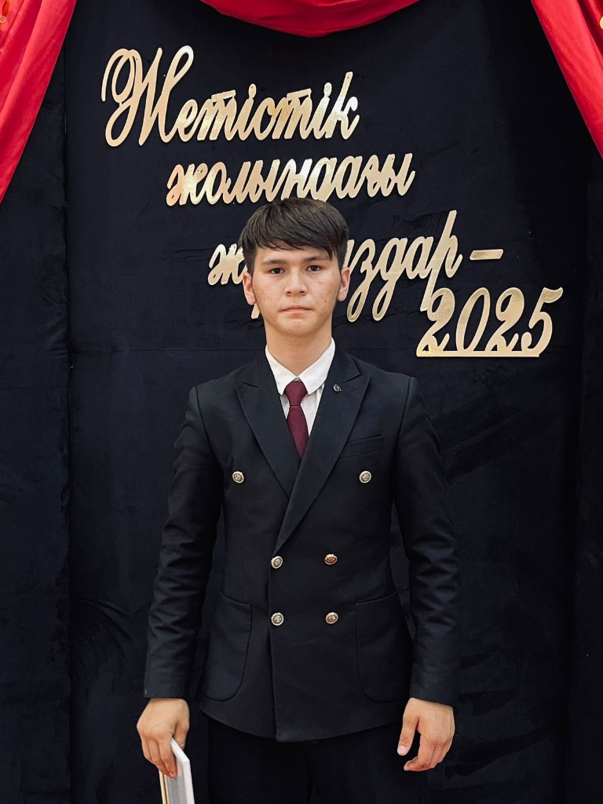

Жас зерттеуші және инженер
Қоғамға пайдалы «Smart» жүйелерді жасаушы.
Arduino платформасын қолданып инновациялық шешімдер әзірлеймін.

Мен-Қызылорда қаласынан шыққан жас зерттеуші және инженермін. Мен қазіргі заманғы технологияларды, атап айтқанда Arduino платформасын қолдана отырып, қоғамға пайдалы «Smart» (ақылды) жүйелерді жасаумен айналысамын. Менің басты мақсаты — адам өмірінің қауіпсіздігін арттыру және күнделікті процестерді автоматтандыру.
Менің ең маңызды еңбектерімнің бірі — «Smart Kitchen» (Ақылды асхана) жобасы. Бұл жүйе асханалардағы газдың жылыстауын және өрт қаупін 1.2-2.5 секунд ішінде анықтап, қауіптің алдын алу үшін газды автоматты түрде өшіруге қабілетті. Менің есептеуінше, мұндай жүйе адам реакциясынан 25 есе жылдам жұмысістейді.
Сонымен қатар, мен экологиялық мәселелерге де көңіл бөліп, «Smart Waste Bin» (Ақылды қоқыс жәшігі) жобасын жасап шықтым. Бұл жоба қалдықтарды басқаруды жеңілдетіп, қала тазалығын сақтауға бағытталған.
Мен өз жобаларымның қолжетімді әрі тиімді болуына, тіпті шағын мектептер мен ауылдық аймақтарда қолданылуына ерекше мән беремін.
Қазіргі таңда жан-жақты ізденіс үстіндемін. Алдағы уақытта жүрек-қантамыр ауруларын ерте анықтау мен алдын алуға бағытталған ғылыми зерттеулерге өз үлесімді қосуды мақсат етемін.
Қазіргі таңда 4 жобаның негізін қалаушы авторымын
Таулы жолдардағы қауіпті аймақтарда апатты алдын алу жүйесі
Ақылды асханалар үшін өртті және газдың жылыстауын ерте кезеңде анықтайтын, шұғыл хабарлама жіберетін және алдын алу шараларын автоматты түрде орындайтын жүйені әзірлеу.
Жүйе қауіпке адамның реакциясынан 25 есе жылдам әрекет етеді. Сенімділік: 50 бақылау сынағының нәтижесі бойынша 98% сәттілік көрсеткішін көрсетті.
Жобаның құны: ~220 USD
Инновациялық қалдықтарды басқару жүйесі
Түйін: Бұл жоба «Ақылды қала» (Smart City) концепциясына өте жақсы сәйкес келеді және оқу орындары немесе қоғамдық орындар үшін таптырмас шешім
Өрт пен газ жылыстауын анықтау жүйесі
Жалпы құны: ~220 USD
Инклюзивті медициналық AI-көмекші
Медициналық көмекті барлық адамдар үшін, әсіресе ерекше қажеттіліктері бар (мүгедектігі бар) жандар үшін қолжетімді, сапалы және жедел ету.
Мәселе: Дәрігерлерге қолжетімділіктің қиындығы, уақыт пен қаражаттың көп шығындалуы, қазақ тіліндегі медициналық цифрлық қызметтердің аздығы.
Шешім: K.I.K.O. Med платформасы медициналық деректерді талдайды, ауру белгілерін бағалайды және нақты медициналық шешім қабылдауға көмектеседі.
Түйін: K.I.K.O. Med — бұл жай ғана ақпарат көзі емес, бұл сіздің денсаулығыңыzdың сенімді сақшысы және өмір бойы білім алуға көмектесетін жеке медициналық көмекшіңіз.
Қызылорда қаласы Сырдария ауданындағы Асқар Тоқмағанбетов атындағы №135 орта мектепте 1-сыныпты үздік оқығаным үшін Мақтау қағазымен марапатталдым.
Сырдария аудандық кітапханалар жүйесі ұйымдастырған «Біз ел болып оқимыз» жобасы аясында жазушы Танаш Дәуренбековтің шығармаларын мәнерлеп оқудан үздік өнер көрсетіп, Алғыс хат алдым.
№135 орта мектептің 2-сыныбын үздік оқығаным үшін Мақтау қағазына ие болдым.
«Мұқағали поэзиясына ғашықтық» атты әдеби кеште өлеңді мәнерлеп оқудан шеберлік танытып, Бас жүлдені иелендім.
№135 орта мектепте 4-сыныпты жақсы оқығаным үшін грамотамен марапатталдым.
«Дарын» орталығы ұйымдастырған «Кенгуру – математика бәріне» атты халықаралық интеллектуалдық конкурсында 2-орын иегері атандым.
«DIOMOND STARS» қауымдастығы ұйымдастырған «Қандай ғажап бұл әлем!» атты республикалық онлайн-байқауда эстрадалық вокал номинациясы бойынша 1-орын алдым.
Төтенше жағдай кезінде қашықтан оқи отырып, «Жас Дарын» хорының жұмысына белсенді қатысқаnym үшін Алғыс хат алдым.
№264 мектеп-лицейінің 5-сыныбын жақсы үлгеріммен аяқтағаным үшін марапатталдым.
Мұқағали Мақатаевтың шығармашылығына арналған «Мұқағали — ұлы ақын» атты шешендік өнер байқауында 1-орын иелендім.
№264 мектеп-лицейінде үздік үлгерімім мен үлгілі тәртібім үшін Мақтау қағазын алдым.
«Мәңгілік ел алыптары» атты патриоттық байқауда эстрадалық ән айту номинациясы бойынша 2-орынға ие болдым.
Облыстық «Интеллектуал» математикалық квестінде 1-орынды жеңіп алдым.
«Кенгуру – математика бәріне» интеллектуалдық ойынына қатысып, республикалық деңгейде 2-орынды иелендім.
№264 мектеп-лицейінің 7-сыныбын жақсы оқығаным үшін марапатталдым.
Грэпплингтен қалалық ашық чемпионатта 55 кг салмақ дәрежесінде 2-орын алдым.
«NOMAD» ММА федерациясының ашық чемпионатында 57 кг салмақта 1-орын иегері атандым.
Грэпплингтен облыстық чемпионатта 59 кг салмақ дәрежесінде 1-орынды иелендім.
«Грэпплинг-ги» бойынша қалалық чемпионатта 55 кг салмақта 1-орын алдым.
Аралас жекпе-жектен (ММА) қалалық біріншілікте 62 кг салмақта 1-орынға ие болдым.
«ORDA FIGHTERS» ММА федерациясы тарапынан жоғары жетістіктерім үшін «Үздік спортшы» номинациясымен марапатталдым.
ARASHI MMA-дан өткен қалалық чемпионатта 14-15 жас аралығында 58 кг салмақта жүлделі орын алдым.
Қоян-қолтық ұрыстан өткен қалалық біріншілікте 61 кг салмақ дәрежесінде 1-орынды жеңіп алдым.
«MEYRAM» балалар киностудиясында актерлік шеберлік пен сахна мәдениетін меңгеріп, «Біздің Шоу» жобасында белсенділік танытқаным үшін марапатталдым.
«Ұлы өнертапқыштыққа алғашқы қадам» атты инновациялық идеялар байқауының қалалық кезеңінде «Үздік рационализаторлық ұсыныс» номинациясы бойынша 3-орын алдым.
Жалпы білім беретін пәндер бойынша республикалық ғылыми жобалар конкурсының облыстық кезеңінде «Техника» бағыты бойынша 3-орын иелендім.
Жасөспірімдер арасында өткен «Хакатон - Tech Teens 2024» бағдарламасына белсенді қатысқаным үшін Алғыс хат алдым.
UNITAR және ЮНИСЕФ-тің «Климаттың өзгеруін жоспарлауға интеграциялау» атты курсын сәтті аяқтадым.
ЮНЕСКО-ның қашықтан оқыту және онлайн білім беру құралдарын меңгеру бойынша мамандандырылған курсын бітірдім.
БҰҰ Еуропалық экономикалық комиссиясының (UNECE) ауаның ластануын мониторингілеу бойынша экологиялық курсынан өттім.
UNITAR ұйымдастырған спортты климаттық іс-қимылдарға пайдалану бойынша базалық және тереңдетілген курстарды аяқтап, сертификат алдым.
Климаттық қаржыландыруды масштабтау және инвестиция тарту тетіктерін үйрететін UNITAR курсын бітірдім.
Климаттық іс-қимылдардағы әйелдер көшбасшылығын дамыту бағдарламасы бойынша білімімді жетілдірдім.
Оңтүстік Африкадағы қалдықтарды қайта өңдеу және айналмалы экономика (Circular Economy) принциптерін зерттейтін курсты сәтті аяқтадым.
Париж келісімін ұлттық деңгейде жүзеге асыру және гендерлік мәселелердің қоршаған ортаны қорғауға (су ресурстары, биоалуантүрлілік, жер деградациясы) әсері туралы 5 түрлі модульдік курсты оқып шықтым.
Meta компаниясының «Әлеуметтік желілердегі маркетингке кіріспе» курсын Coursera платформасы арқылы аяқтадым.
Meta компаниясының «Әлеуметтік желілерді басқару» (Social Media Management) курсын бітіргенімді растайтын сертификат алдым.
Google компаниясының киберқауіпсіздік негіздері бойынша кәсіби курсын сәтті аяқтадым.
Джонс Хопкинс университетінің «Психологиялық алғашқы көмек» курсынан өтіп, сертификат иелендім.
Lecturio платформасы арқылы сердечно-сосудистая системаның анатомиясы мен физиологиясын оқып, медициналық сертификат алдым.